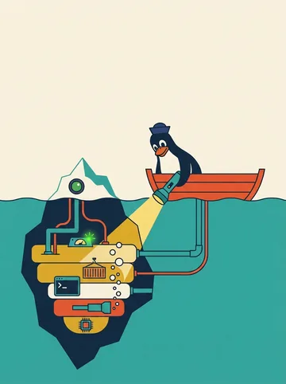
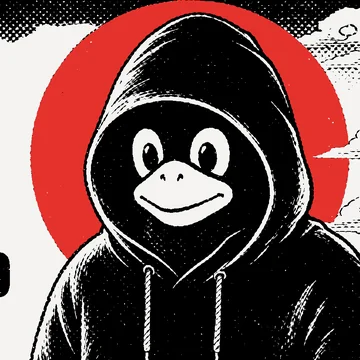

Valentín Torassa
YouTube
ES / EN
PROD 1.2
libro.pdf
▪▪▪

No podés defender lo que no entendés
Capítulo 1 gratis
whoami.mp3
▪▪▪

whoami
El podcast: la gente detrás de la seguridad.
canal.mp4
VT Security
44 mil · 620 videos
comandle.sh
c
h
m
o
d
El comando del día
labs/
Open Security Labs
Practicá como en producción
notas.md
Blog
Fallas reales y sus comandos
links.vtsecurity.com.ar
del código a producción